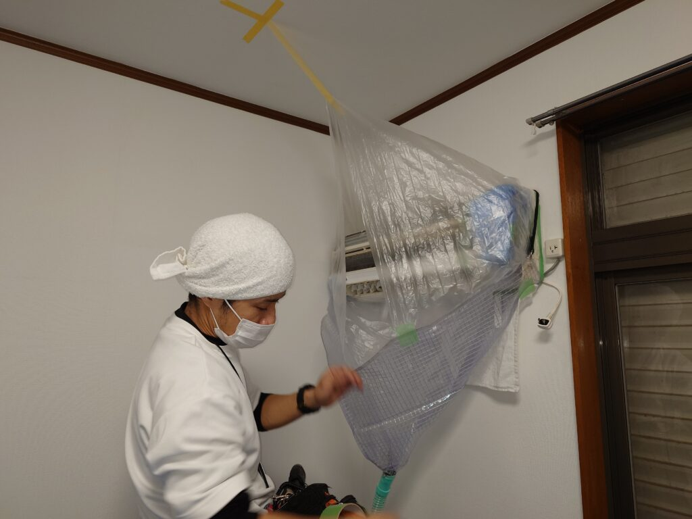
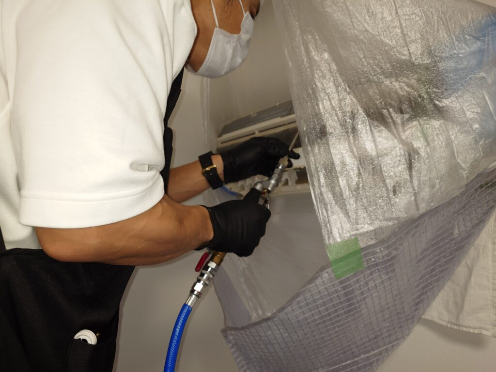
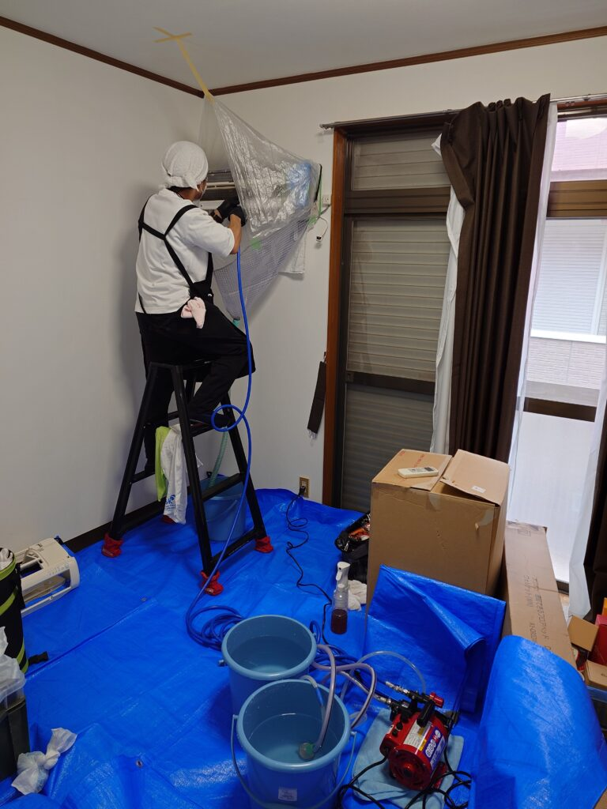
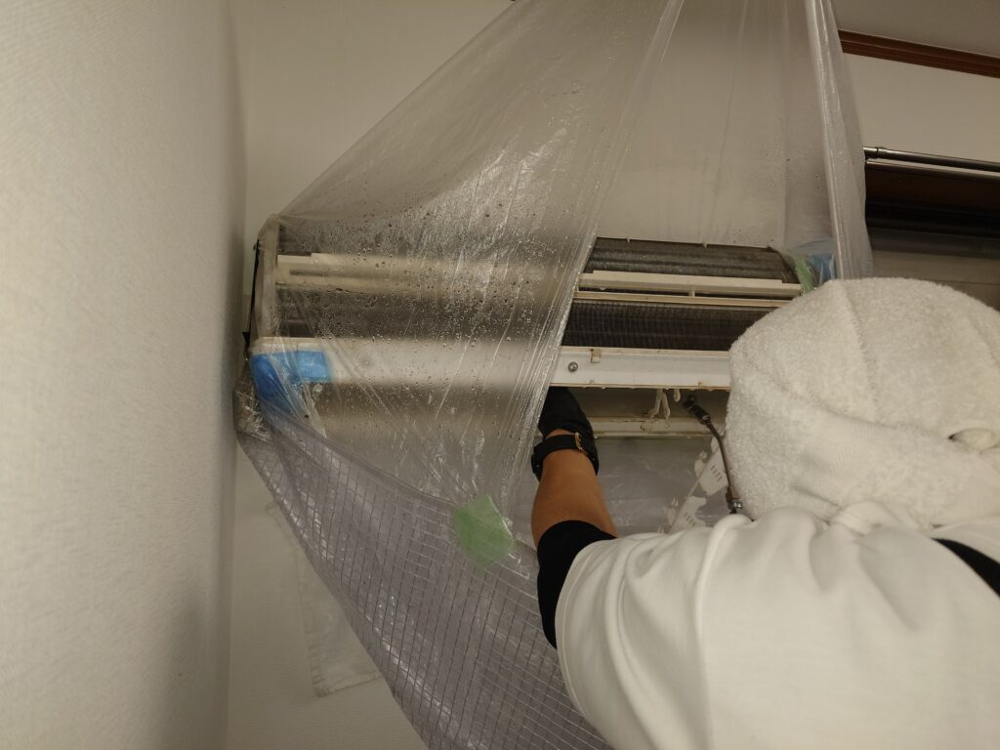

あなたの街にOPENしました!港区白金台DAIZENのエアコンクリーニング情報！ハイレベルのエアコンクリーニング研修を実施しております!

DAIZENの新事業「ありがとうエアコンクリーニンググループ展開」では、徹底的にハイレベルプロ研修を実施して、最高基準に到達したお客様訪問スタッフを誕生させております!グループのプロ技術者の中から特に選ばれたトレーナーが各スタッフに専任トレーニングを実施して、高い基準の研修をクリアした者がお客様のご家庭を訪問しております、ぜひお申し込み下さい!宜しくお願いいたします!


